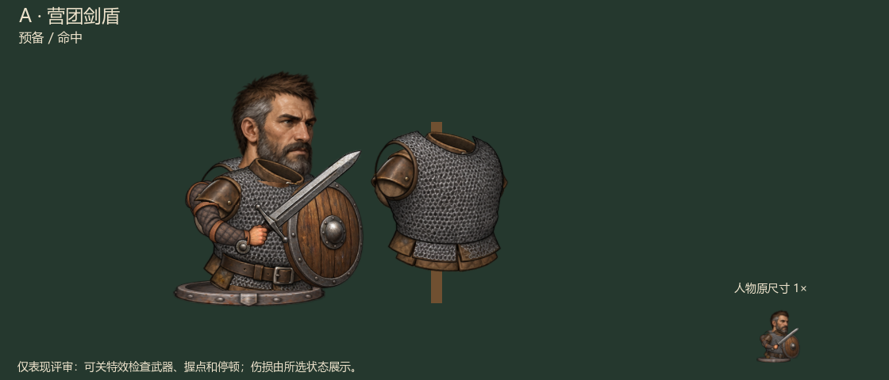
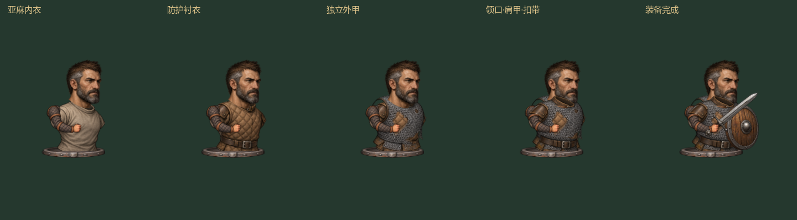
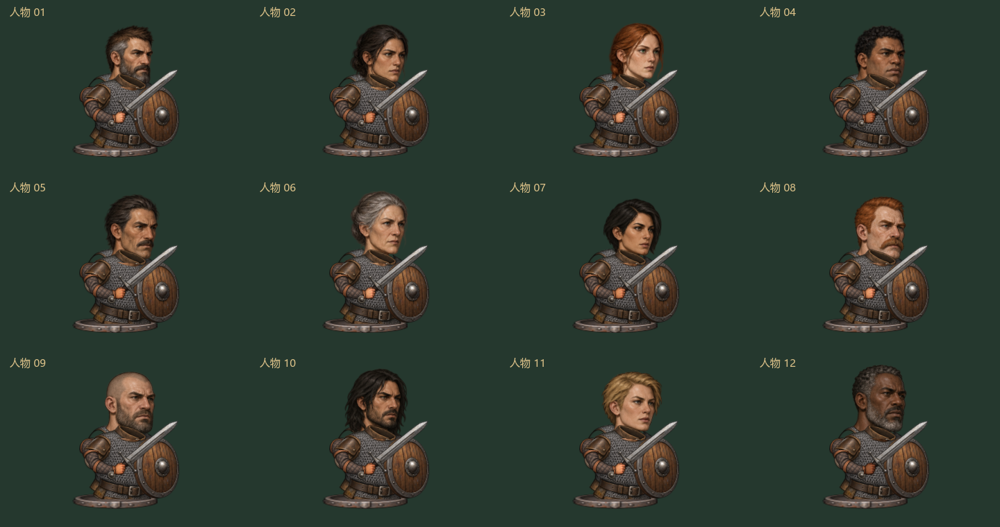
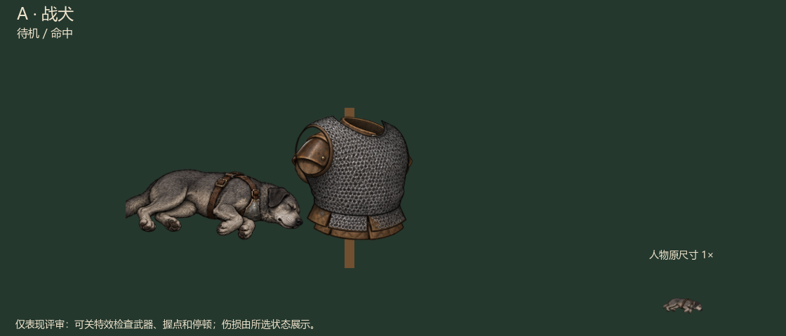
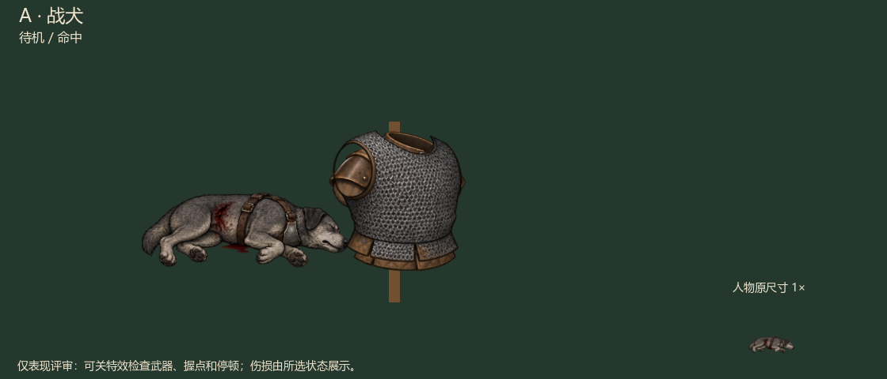

沿用 H 的精细外观，以 A 的小幅动作配合少量臂姿替换。这里回放实际 Windows 评审包的画面；可暂停逐帧看握点、遮挡与命中停顿。

网页回放保留完整动作节奏，帧间为离散截图。Windows 包可连续拖动、切换全部人物与装备、选择命中／格挡／落空、关闭特效及试听声音。

当前覆盖武器、护甲两类实际装备槽。内衣和衬衣是表现层；头盔、披风、独立副手等新槽位尚未实现，不能把这次分层当成任意装备已经能自由套穿。



这是一套右向生产资产库和独立动作评审包，未替换正常战役的全部人物表现。四甲站立各有四个耐久档；倒伏采用专用身体，并区分完好／受损两档。六向专用姿势、独立发型胡须、任意新槽位及更细的致死伤口仍未完成。
战斗规则和存档不由动画结算。资产规模不是用户视觉验收；小幅动作的自然度与画风仍以你的观感为准。详见 验证记录、生成提示、来源及哈希。